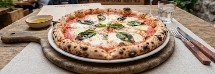

SaborMap
Menús, disponibilidad y promociones cerca de ti
Prototipo navegable con dos vistas de la misma aplicación: la de quien busca dónde comer y la del local que publica su carta.

Para comensales
Explorar restaurantes
Mapa de locales cercanos, cartas con disponibilidad en vivo, detalle de platos, promociones y reseñas.
Abrir vista comensal
Para restaurantes
Panel del local
Administra la carta, las fotos, los precios, la disponibilidad de platos e ingredientes, las promociones y el horario.
Abrir panel del localLa aplicación es solo informativa: no incluye pedidos, compras ni reservas.